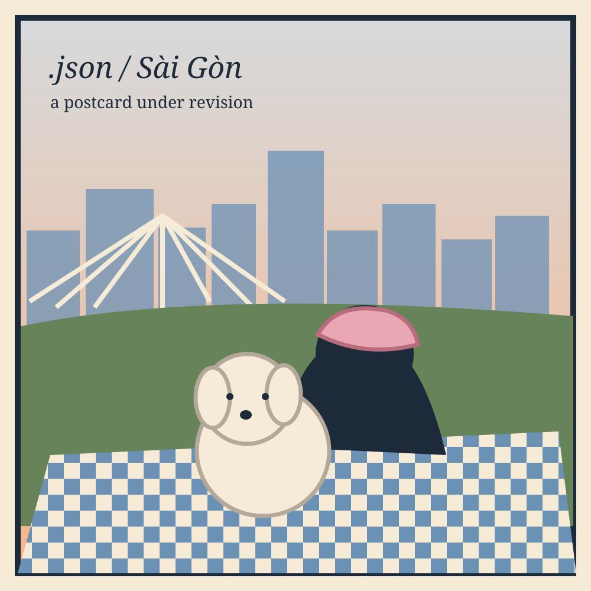

01 / POSTCARD FROM SÀI GÒN
Viết cho Sài Gòn của t
Không phải bản đồ địa lý, mà là một bản đồ ký ức về những lần bắt đầu lại.

Eight memories, one city
This is a non-identifying preview. The full chapter, real photo references and signed memoir remain in author review and are not published through this route.